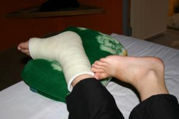

Le 27 janvier 2005,
Une fois arrives a l’aeroport de Bangkok, nous sommes entierement pris en charge par un membre du personnel qui nous prend notre passeport et nous le rend 10 min plus tard avec le visa de 30 jours a l’interieur. Super, c’est du rapide ! Pas besoin de faire la queue pendant une heure au departement des visas... On nous amene jusqu’a un taxi et hop, nous voila en route pour Siam Square. Nous comptons d’abord trouver un hotel pour la nuit et puis partir des que possible a l’hopital pour faire soigner mon pied.
Malheureusement, la conductrice du taxi ne parle pas un mot d’anglais et c’est la croix et la banniere pour arriver a lui faire comprendre l’endroit ou nous souhaitons aller. Nous arrivons finalement devant l’hotel desire. Il est beaucoup trop cher pour nous et ne possede meme pas l’eau chaude ! Il faut en trouver un autre... Heureusement, plusieurs hotels fleurissent dnas cette rue. Le suivant est au 3eme etage sans ascenseur... Impossible pour moi ! Enfin, nous trouvons une chambre un peu chere, mais qui se situe au 3eme etage avec ascenseur ! Que demander de mieux ? Hop, les bagages deposes, nous voila deja repartis direction l’hopital ! De la meme facon que tout a l’heure, nous nous retrouvons coinces dans des embouteillages ahurissants ! C’est bien pire qu’a Paris ! La cause vient surtout du fait que chaque feu rouge dure environ 20 min ! Il faut etre d’une patience d’ange pour attendre qu’il passe au vert ! Les chauffeurs de taxi doivent s’arracher les cheveux ici...
Enfin, nous arrivons a l’hopital... Nous restons bouche bee devant la magnificence de l’edifice ! On dirait un hotel 6 etoiles !! L’hopital est tout en verre et brille de mille feux, c’est incroyable ! Je me demande immediatement combien va nous couter la consultation ! Je n’ai pas depose un pied hors du taxi que 2 ou 3 infirmiers viennent m’apporter un fauteuil roulant immediatement. Je suis aussitot emmenee dnas une grande salle majestueuse contenant de beaux fauteuils en cuir et un gigantesque bureau en rond derriere lequel se trouve des assistantes plus belles les unes que les autres tapotant sur le clavier de leur ordianteur dernier modele ! L’une d’entre elles nous accueille avec un grand sourire et dans un anglais parfait, nous demande de remplir toute une serie de paperasse. Nous nous executons et elle appelle ensuite un "porteur" qui est charge de nous emmener voir l’orthopediste. Une jeune medecin nous accueille dans son bureau et nous lui expliquons mon cas avec les radios prises a Luang Prabang a l’appuie. Il me tate le pied dans tous les sens et je n’ai pratiquement pas mal. Il me reste toutefois une douleur dans le ligament gauche. Par contre, une fois le strapping enleve, je m’apercois que mon pied est toujours gonfle et qu’une grosse marque bleue s’etend sur le cote gauche de mon pied. Il nous dit qu’il prefere refaire une radio precise de la cheville. Soit...
Je pars en salle de radio et, sans bouger de mon fauteuil roulant, juste en posant mon pied sur un tabouret, ils me prennent une radio de ma cheville. Je retourne voir le medecin qui est en train d’inspecter la radio de mon pied directement sur son ordinateur ! Ils n’ont meme plus besoin de developper la radio maintenant, c’est du delire ! Il m’annonce fierement que je n’ai rien de casse ! Merci ,je le savais deja... Si c’etait juste pour me faire payer une radio supplementaire, il fallait le dire tout de suite ! Il m’annonce, par contre, que mon ligament a subi une elongation et qu’il faut envisager de mettre un platre durant une courte periode afin de maintenir mon pied correctement. Un platre ? Je ne m’attendais pas du tout a ca... Je lui demande ce qu’il entend par "courte periode". Il commence par me dire qu’une semaine, ca serait bien, puis ca devient 10 jours et ca finit par 2 semaines, juste pour etre sur !! Deux semaines avec un platre ? Evidemment, je peux oublier la plage, le sable et l’eau ne faisant pas bon menage avec un platre... Et de toute facon. comment pourrais-je me deplacer dans le sable ? En bequilles ? Je suis completement decouragee... Je dois me retenir pour ne pas eclater en sanglots devant le medecin... Je suis en train d’effectuer le plus beau voyage de ma vie et il m’annonce que je vais rester 2 semaines dans le platre alors que ca fait deja une semaine que je galere ! Sans parler de la reeducation que je vais devoir effectuer par la suite !
Je le regarde poser le platre d’un oeil morne, je suis videe de toute energie ! Il me pose des bandelettes en plastiques qui, en quelques minutes, deviennent aussi dures que du bois. C’est vrai que mon pied est mieux maintenue de cette facon, mais le platre est tellement dur a porter ! Il faut passer a la caisse maintenant... La note est salee : 115 euros ! Il va falloir faire jouer l’assurance de la carte bleue...
 Je retourne a l’hotel attristee et vraiment decue... C’est encore une fois la galere pour expliquer au taxi ou nous souhaitons aller, c’est meme nous a la fin qui lui indiquons la route ! Nous sommes epuises et le taxi ne nous facilite vraiment pas la tache... Arrivee dans la chambrem je peux enfin laisser libre court a ma tristesse. Heureusement que Michael est la pour me consoler ! N’ayant meme pas le courage de descendre pour manger, Michael me rapporte quelques brochettes et du riz que j’avale couchee dans mon lit sans avoir vraiment beaucoup d’appetit. Je tombe de sommeil et ne tarde pas a m’endormir malgre tout... Demain est un autre jour !
Eve-Laure
{kind=link}